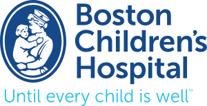

|
I am currently a Research Fellow and Lab Manager at the State Key Laboratory of Cognitive Science & Mental Health (Chinese Academy of Sciences), where I lead multi-method studies on childhood adversity, resilience, and intervention mechanisms across large-scale datasets, clinical adolescent cohorts, and juvenile intervention trials. My current research includes investigating the neurobiological and psychological impacts of early adversity, examining protective traits linked to preserved executive function, and conducting neuroimaging studies to understand developmental trajectories. I hold an M.A. in Experimental Psychology and a B.A. double major in Philosophy and Psychology from Brandeis University. My Master's thesis, "Alcohol as a Predictor of Sexual Aggression Recidivism," employed exploratory factor analysis with logistic and Cox models on Massachusetts Treatment Center archival data and has been accepted for presentation at ATSA 2025. I actively collaborate with Harvard's Lab for Youth Mental Health on intervention meta-analyses and cross-cultural emotion regulation research, managing PRISMA workflows, REDCap databases, and effect-size modeling with culturally sensitive coding approaches. I maintain IRB compliance, train research assistants across multiple sites, and am actively preparing for doctoral research in developmental psychopathology with expertise spanning statistical analysis, programming, and multilingual research coordination. |

|
 |
Research Fellow & Lab Manager, Chinese Academy of Sciences, Institute of Psychology (June 2025-Present)
Working with Dr. Hang Xu and Dr. Weiwen Wang on projects exploring the neurobiological and psychological impacts of early adversity, including a neuroimaging study and an investigation into protective traits linked to preserved executive function. Leading multi-method studies on childhood adversity, resilience, and intervention mechanisms across large-scale datasets, clinical adolescent cohorts, and juvenile intervention trials. |

|
Research Assistant, Emotion and Psychopathology in Context (EPIC) Lab (Feb 2025–Present)
Contributing to meta-analysis project on the role of emotion regulation in mental health across cultural contexts. Responsibilities include assisting in a meta-analysis examining the impact of cognitive reappraisal and expressive suppression on depression, anxiety, and well-being, with tasks such as literature screening, data extraction, data cleaning, and analysis. |
|
Research Assistant, Lab for Youth Mental Health (Oct 2024-Present)
Engaging in comprehensive research on youth mental health interventions, with a focus on school-based settings. This includes conducting a meta-analysis of approximately 300 studies addressing social, emotional, and behavioral (SEB) problems in K-12 students, such as depression, anxiety, ADHD, and conduct issues. Responsibilities include testing the overall effectiveness of these interventions, analyzing factors that enhance or diminish their outcomes, and examining the relationship between improved mental health and academic performance. Additional duties involve assisting in a meta-analysis on the impact of homework completion in psychotherapy, with tasks such as data collection, cleaning, management, and preparation of manuscripts for publication. Collaborating with a multidisciplinary team to generate insights into how interventions affect student functioning, academic outcomes, and mental well-being. |
|
Graduate Research Assistant, Prof. Raymond Knight's Lab (June 2023-Present)
During my time in the Knight Lab, I began by assisting Dr. Sonja Krstic with studies on sadism, psychopathy, and sexual offending, providing a strong foundation for my independent research. Under the mentorship of Dr. Raymond Knight, I designed and conducted my thesis project, Alcohol as a Predictor of Sexual Aggression Recidivism, using archival data from the Massachusetts Treatment Center (MTC) Dictionary. This project has been accepted for presentation at the ATSA 2025 conference, and I am currently preparing the manuscript for publication. In the lab, I studied the developmental trajectories and typologies of aggressive behaviors, particularly sexual aggression and psychopathy. I gained extensive experience in data analysis, managing the Multidimensional Inventory of Development, Sex, and Aggression (MIDSA), and contributing to research publications. I also developed skills in scientific writing, conference presentations, statistical analysis, programming (R, Python, SPSS), IRB protocol preparation, and completed CITI training. |
|
|
Summer Research Assistant, Chinese Academy of Science (May 2021-Sept 2021)
At the Chinese Academy of Sciences, Institute of Psychology, I contributed to research on poverty-related psychological issues, female parenting behavior, and the relationship between income and happiness. As part of Dr. Xiufeng Chen’s project, I was trained in data collection and entry while also providing support in the analysis and writing process for work that was later published in Applied Research in Quality of Life. Beyond my project work, I actively engaged in weekly journal readings and discussions, which deepened my understanding of current psychological research and fostered critical thinking. This experience allowed me to develop valuable research skills, including methodological rigor, data management, collaborative writing, and an appreciation for the broader research landscape in psychology. |
|
Graduate Course Assistant, Developmental Psychology (Fall 2024)
Graduate Course Assistant, Statistics (Fall 2024) Graduate Course Assistant, Introduction to Psychology (Spring 2025) Graduate Course Assistant, Statistics with R (Spring 2025) |
|  |
Psychology Student Intern, Boston Children's Hospital， Pediatric Physicians' Organization at Children's (PPOC) (Aug 2023 – June 2024)
At Boston Children’s Hospital, I worked on the front lines of clinical practice, gaining extensive experience in patient-centered care. I led a project to develop a digital tool aimed at enhancing the effectiveness of treatment by fostering stronger connections between clinicians and their patients. Utilizing Umbrella, SurveyMonkey, and Qualtrics, I designed and distributed surveys to clinicians across Massachusetts, collected and cleaned the data using RStudio, and analyzed key priorities for the tool’s development. This work focused on improving treatment outcomes while ensuring patient privacy and obtaining parental consent. |
Website design adapted from academic portfolio templates. |